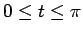
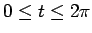
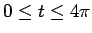

Next: About this document ...
Maple Problem Set #2
Before doing these problems, create clean new worksheet and put your
name at the top. These problems require you to use the plots library. You can load in this library with the command:
[> with(plots);
Here are some problems to try.
- 1.
- Consider the surface
x2 -y + z2 = 0.
Before using Maple, try to anticipate what you expect it to look like.
Use both implicitplot3d and plot3d to graph the surface.
- 2.
- Plot the sphere
x2 + y2 + z2 = 1
using plot3d by patching together two surfaces. Plot the
surface using sphereplot.
- 3.
- Consider the curves
Plot them for parameter ranges

,

and

.
You may have to set the numpoints=... option to get a clean rendering of the curve. Which curve
repeats itself and which does not? Feel free to experiment with the
parameter ranges until you see what is happening.
Explain this mathematically by
studying the periods of each component of each function.
- 4.
- Use Maple to find out how many times the helix,
crosses the plane
10x + 10y + z = 1.
- 5.
- Consider the surface
Use implicitplot3d to graph it, but before doing so, anticipate
what it will be and where it will be located so that you can correctly
choose the domain. Describe the surface quantitatively (ie ``A sphere
centered at ... with radius ...'').
Next: About this document ...
Louis F Rossi
2002-02-27